Jesse Dee
Japanese Irezumi
Neo-Traditional
Mastering the bold lines and saturated colours of Neo-Trad, to a decade studying the composition and design in Irezumi. Jesse's work speaks for itself.
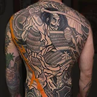
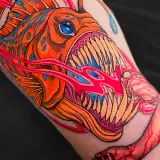
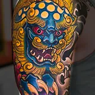
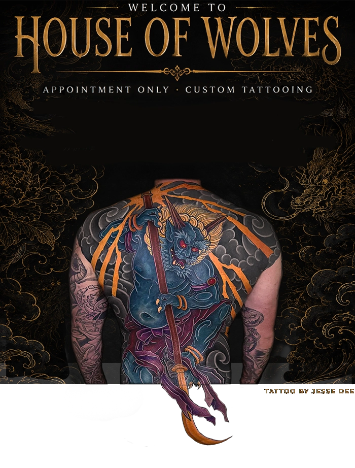
Japanese Irezumi
Neo-Traditional
Mastering the bold lines and saturated colours of Neo-Trad, to a decade studying the composition and design in Irezumi. Jesse's work speaks for itself.



American Traditional
Shannon’s Japanese works reflect his deep study of its imagery and folklore, and his American Traditional pieces show his roots in bold, classic tattooing.
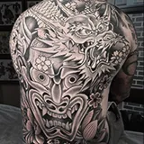
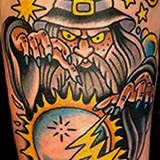
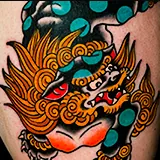
Black & Grey • Bold & Bright
Strong foundations of American Traditional, tough compositions from mythology, and the metal covers dark images. Set's Joshua's style, Medievil.
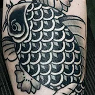
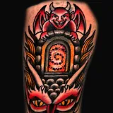
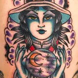
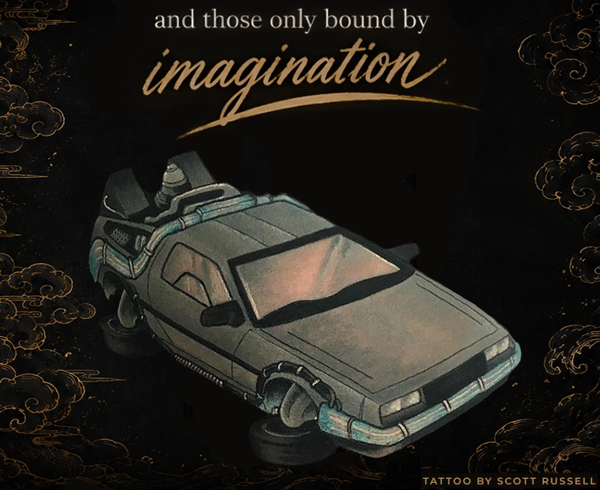
Illustrious Illustrations
Bringing her bold illustrative precision to an ethereal world of nature and myth, Lacey crafts jewel-toned masterpieces set in pure fantasy.
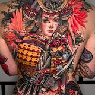
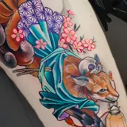
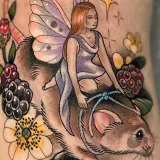
Abstract • Ornamental
With a background in design, Mark's work is guided by balance, symmetry and the natural form.
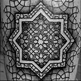
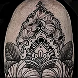
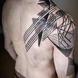